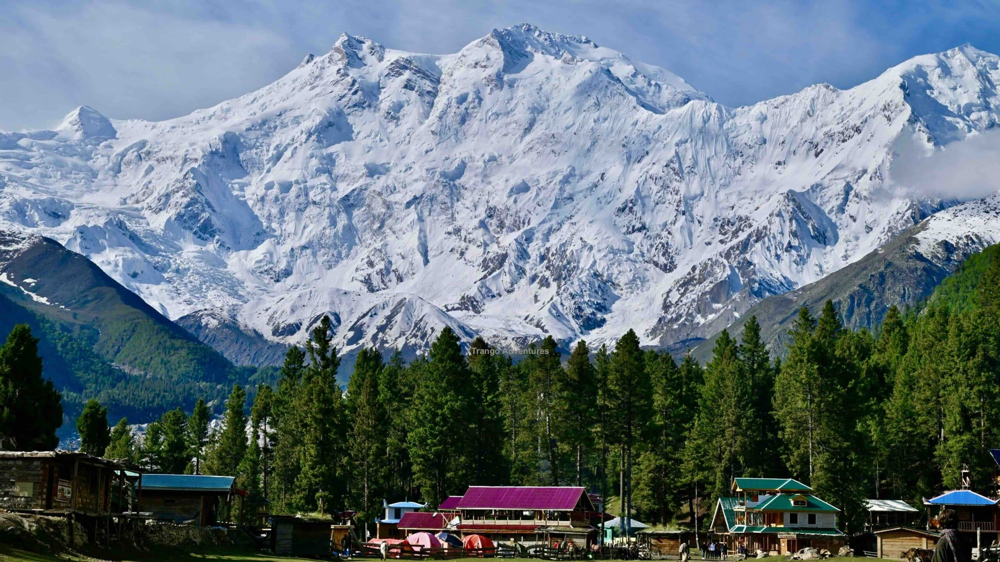
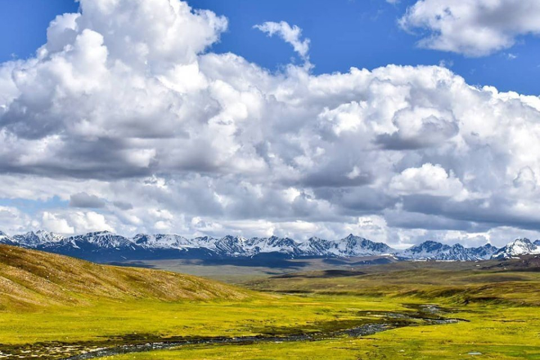
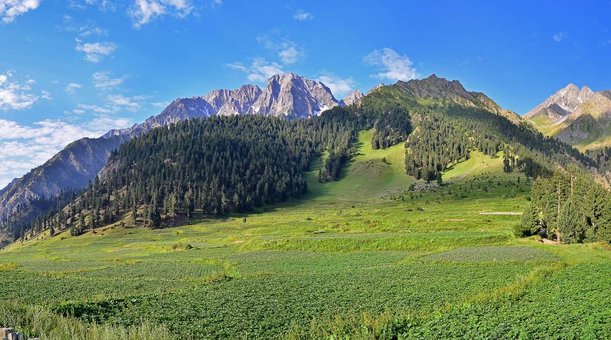
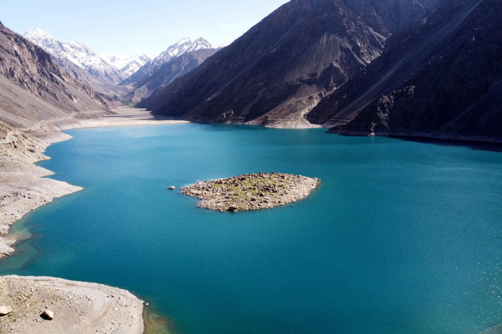

Hunza Valley
One of the most beautiful valleys in the world. Famous for its cherry blossoms, Baltit Fort, and panoramic mountain views including Rakaposhi and Ultar Sar.
Explore Hunza →
Attabad Lake
A vivid turquoise lake formed after a 2010 landslide. Boat rides on its crystal waters with dramatic mountains all around make it truly surreal.
Explore Attabad →
Skardu
The adventure capital of Pakistan. A base camp for K2 expeditions, home to Deosai Plains, Shangrila Resort, and the Satpara Lake.
Explore Skardu →
Fairy Meadows
A breathtaking alpine meadow at 3,300m altitude, offering an unobstructed view of the mighty Nanga Parbat. A hiker's dream destination.
Explore Fairy Meadows →
Nanga Parbat Base Camp
Trek to the base of the world's 9th highest peak. The "Killer Mountain" commands awe and respect, offering one of the world's most dramatic hiking experiences.
Explore Nanga Parbat →
Deosai National Park
One of the world's highest plateaus at 4,114m. Known as the "Land of Giants," it is home to the Himalayan brown bear and vast wildflower fields.
Explore Deosai →
Naltar Valley
Famous for its three colorful lakes and natural pine forests. A perfect escape for nature lovers and also home to Pakistan Air Force ski resort.
Explore Naltar →
Satpara Lake
A natural freshwater lake near Skardu with crystal clear blue water. It supplies drinking water to Skardu and is perfect for trout fishing and picnics.
Explore Satpara →